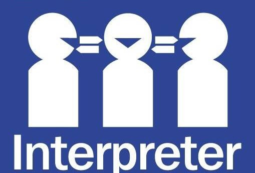

Read high quality newspapers (e.g. the New York Times, Wall Street Journal) EVERY DAY for at least a year.
Read high quality news magazines (e.g. the Economist，the Financial Times), cover to cover.
Read your favorite topics in your non-native language(s).
Read other well-written material that will help broaden your general knowledge.
Don't just listen to news stories; analyze them.
Keep abreast of current events and issues.
Record news programs and interviews so you can listen to them later.
Take college-level courses, review high school texts, etc.
Strengthen your knowledge in a specialized field (preferably in a technical field, such as computers).
A stay of at least six months to a year is recommended.
Live with and/or frequently interact with native speakers of your non-native language.
Take content-related courses (e.g. macroeconomics, political science) in your non-native language (not just pure language courses).
Work in a setting that requires high level use of your non-native language.
Take challenging composition courses (not just creative writing courses, but classes in journalism, technical writing, etc.)so you can “speak” journalese, UNese, legalese, etc.
Copy (by hand) sections of textbooks and periodicals in your non-native language(s).
Make a note of unfamiliar or troublesome grammatical points and work towards mastering them.
Practice proofreading.
Take rigorous speech courses and/or join Toastmasters (www.toastmasters.org).
Practice writing and making presentations in front of other people in both your native and foreign language(s).
(Have native speakers of your non-native language edit your speeches.)
Practice listening to speeches and orally summarizing the main points.
Practice writing summaries of news articles.
Practice deciphering difficult texts (e.g. philosophy, law, etc.).
Practice explaining complicated concepts understandably.
Identify resources for background research (e.g. library, Internet, etc.).
Familiarize yourself with navigation and file management under current Windows operating systems(most of the software tools used in the localization industry today are not compatible with the Apple operating system).
Develop an understanding of the features Windows offers for multilingual processing, such as language-specific keyboard layouts, regional settings for units of measurement.
Learn to use advanced functions of Word, Excel, and other Microsoft Office applications in both your native and non-native languages.
Become an expert in search engines and online research by using these tools on a daily basis.
Eat sensibly, exercise regularly, and get sufficient sleep.
These are all habits required of a good translator/interpreter.
Be patient. Bringing your language skills and analytical skills up to the level required of a professional translator or interpreter is not a task that can be accomplished in a few short years.
Only with a lot of sustained hard work can anyone truly succeed in these challenging and exciting fields.
